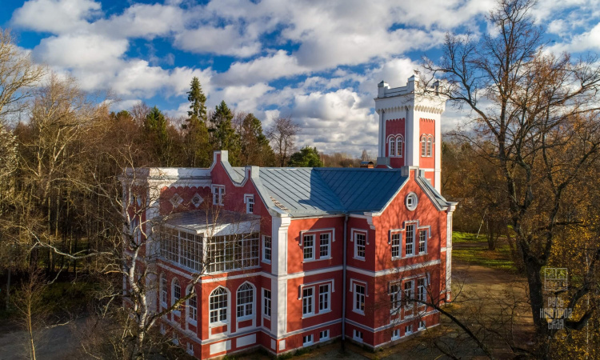

Усадьба Неклюдова

В середине XIX века на берегу Мсты был построен замок из красного кирпича со стрельчатыми окнами и готической башней в форме короны, принадлежавший действительному статскому советнику Сергею Петровичу Неклюдову.
Основные ссылки и контакты: